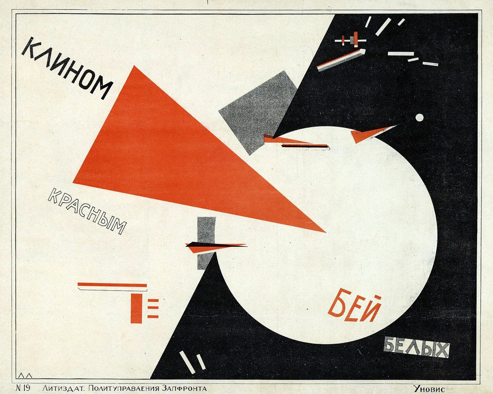

References / Poster / 122
Beat the Whites
with the Red Wedge
El Lissitzky’s Civil War poster turns a political slogan into pure geometry: a red triangle drives into a white circle on a black field.
- Source
- Russian State Library digital collection
- Creator
- El Lissitzky
- Made
- 1919–1920 (Commons, after the Russian State Library); 1919 (Wikipedia)
- Style
- Constructivism (agent-proposed, not yet reviewed by a person)
- Moods
- Agitational, dynamic, geometric
- Evidence
- Downloaded and inspected the Russian State Library scan published on Wikimedia Commons (3360 × 2688 px, viewed at 1920 px). The Commons record names the Russian State Library as the holding institution and gives no call number.
- Reviewed
- Rights
- Open license, stored. License: public domain. Rights policy

Context
Lissitzky made the poster during the Russian Civil War, in which the Bolshevik “Reds” fought the anti-Bolshevik “Whites”. Wikipedia.
The imprint at the bottom reads “№ 19 Литиздат. Политуправления Запфронта” (lithographic publishing office of the Political Administration of the Western Front) and “Уновис”, the group around Kazimir Malevich in Vitebsk. The sheet measures 48.8 × 69.2 cm according to the Commons record.
Wikipedia records that the art historian Maria Elena Versari connects the image to Italian Futurism, and that Nikolai Kolli built a “Red Wedge” monument in Moscow in 1918 with the same symbol. Wikipedia.
Observed
- The format is landscape. The ground is unprinted cream paper, framed by a thin black rule.
- A large red triangle enters from the upper left and points into a white circle that sits on a black field. The black field is cut by a diagonal edge that runs from the top center to the bottom center.
- Small red and black splinters, bars, and a gray stippled rectangle scatter around the point of impact.
- “КЛИНОМ” runs down to the right in heavy black sans-serif capitals. “КРАСНЫМ” follows in outline capitals on a steeper diagonal.
- “БЕЙ” is set in red capitals inside the white circle, and “БЕЛЫХ” is set in outline capitals on a gray stippled block on the black field.
- The only hue is an orange-red. Everything else is black, gray tint, and paper.
Why it belongs
The poster states the style’s whole grammar in one sheet: one hue, a diagonal thrust, elementary shapes that carry the meaning, and words that follow the direction of the shapes instead of a baseline.
The screenshot measurement finds exactly one hue and 9% chromatic area, inside the style’s fingerprint for color.hues and color.chromaticShare.
Borrow
Let one red shape point at the most important element on the page, and make everything else black, gray, or paper.
Rotate each word of a short heading to a different angle so that the words follow the shapes.
Split the ground into a light and a dark field with one diagonal edge.
Measured
Machine-extracted by tools/image-traits.py on . Full measurement.
- Mean chroma
- 0.11
- Palette
- #f1efdf 54%
- #121315 22%
- #d94b20 7%
- #e6e5d4 4%
- #d75f35 2%
- #dad7c8 2%
- #7d7f7b 2%
- #080808 2%

